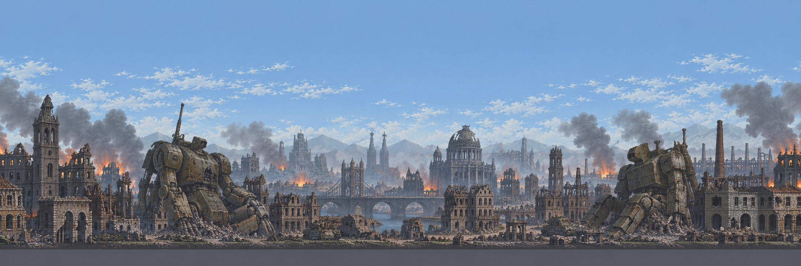
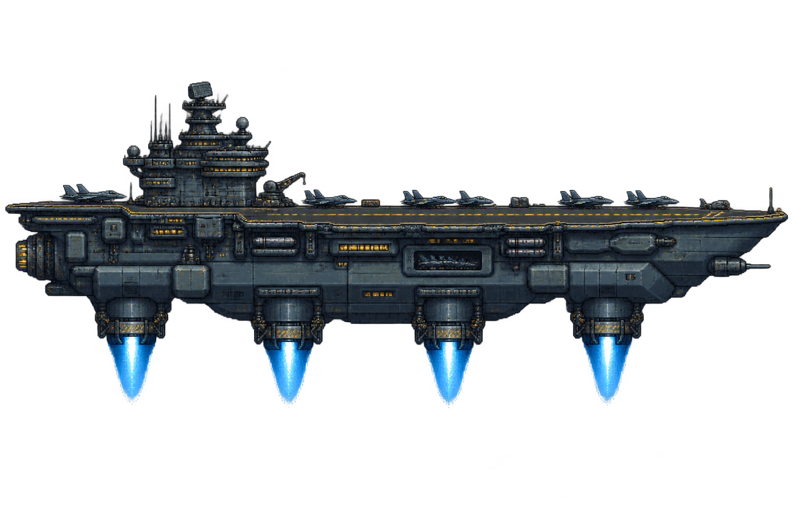
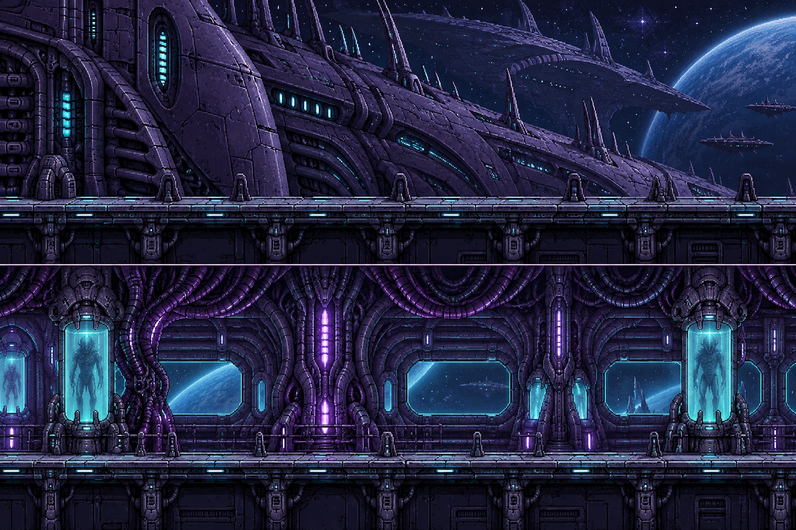

Misiones

MISIÓN 02El umbral del reyCruza edificios y oficinas en ruinas, pasa entre mechas abandonados y explora el cementerio hasta el mausoleo del rey.Recorrido horizontal · Lluvia · Soldado y lobo

MISIÓN 03Guerra en el AireAsalta el portaaviones, vence al Centinela y consigue el robot de dos armas.Recorrido corto · Combate aéreo · Nuevo traje

MISIÓN 04Furia en la CarreteraPersigue al convoy en moto, combate sidecars y jeeps, y desarma al Devorador de Asfalto.Persecución continua · Mini tanque desbloqueable · Jefe por piezas

MISIÓN 05Bajo el abismoDesciende entre buzos y minas, entra al submarino y derrota al capitán para desbloquear al luchador.Combate submarino · Mini submarino · Arsenal del capitán

MISIÓN 06El último centroRecorre tres plantas, juega en Arcade y enfrenta al Coloso de la azotea.Escaleras mecánicas · Tres minijuegos · Gigante

MISIÓN 07El Soberano del VacíoCruza la nave, combate aliens y platillos tripulados, y enfréntate al Soberano de tentáculos.Exterior e interior · Láseres · Poder alienígena

MISIÓN 08 · FINALNueva York · La última batallaCruza el tráfico, reúne a los policías y derrota al Comandante antes de que tome el control de su robot gigante.Policías aliados · Nuevos soldados · Jefe de dos fases